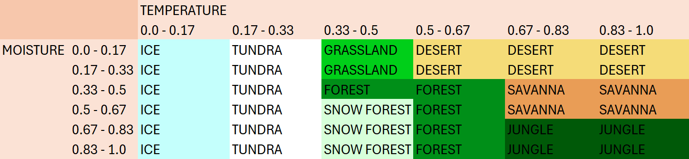
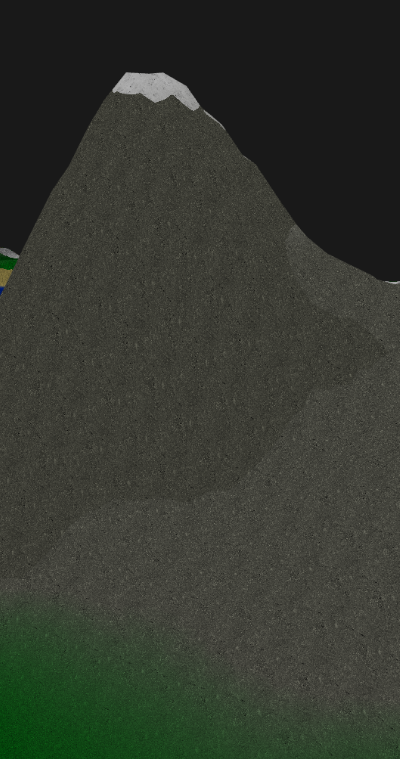

This is my blog post on procedural terrain generation. My blog post is about procedural terrain generation. The terrain of a game is really important, especially in an open-world game, because that’s where you spend most of your time. Creating realistic and dynamic terrains adds a lot to the experience of a game, but it’s also one of the more challenging parts to get right. In this post I'll go though the way how I made a basic terrain generator.
The first step in creating terrain is generating a heightmap, which determines the elevation of the terrain at specific points. To make this heightmap I make use of perlin noise, this is a technique that creates smooth, natural looking gradients.
In this code snippet you can see how I populate the noise vector.
std::vectornoise(width * height); for (int y = 0; y < height; y++) { for (int x = 0; x < width; x++) { float noiseValue = perlin.octave2D(x ,y, octaves); noise[index] = noiseValue; } }
Simply creating a map with perlin noise does not provide enough detail. To make it more detailed you need to increase the number of octaves in the perlin noise.
Here's the difference between using 1 octave and 4 octaves.
Now that you have the height data for your terrain you need to apply it to a mesh. I start with creating a flat plane mesh and then for each vertex, I check the heightmap to find the corresponding height based on its position.
When applying the heightmap directly to a flat plane, it looks like this:
The issue with this terrain is that it looks really bland, It doesnt have high mountains or flat land. You can fix this by raising the height to a power.
for (int y = 0; y < height; y++) {
for (int x = 0; x < width; x++) {
float height = noise[x + y * width];
elevation[x + y * width] = pow(height, n);
}
}
Now that you have the terrain mesh, the next step is to add some color to it. I do this by creating a list of terrain colors, each corresponding to specific height ranges, and apply them to the mesh.
struct TerrainColor { std::string name; float height; glm::vec3 color; }; std::vectorterrainColors = {{"DeepWater", 0.20f, glm::vec3(35, 60, 182)}, {"Water", 0.30f, glm::vec3(46, 81, 255)}, {"Beach", 0.35f, glm::vec3(245, 245, 122)}, {"Grass", 0.55f, glm::vec3(24, 212, 11)}, {"HighGrass", 0.75f, glm::vec3(14, 135, 5)}, {"Mountain", 0.80f, glm::vec3(115, 113, 111)}, {"HighMountain", 0.95f, glm::vec3(56, 56, 55)}, {"Snow", 1.00f, glm::vec3(255, 255, 255)}};
After applying these values for the height and the color to the mesh I blend the edges together so it doesn´t have rigged edges. I do this by calculating how far away a specific point is from a border and interpolate between the two bordering colors. You can see the diffrence that blending the colors make here.
Now that the terrain has some color you want to add some variation. I have done this by adding biomes. I first generate two noise, one for temperature and one for moisture. In the table on the below you can see what biome I assign to what moisture and temperature values. This produces a nice looking biome map where for example desert and snow biomes won't share a border.
With the terrain's structure and biomes complete, the next step is to make it look nicer by adding textures. I created a texture list that gets passed to the shader, where each color and height value corresponds to a specific texture ID.
Although the terrain looks much better with textures, sharp transitions between colors and textures at different heights still doesn't look great. This can be fixed by blending the two bordering colors and textures together. This is done by checking if it is in within the blendRange and then smoothly interpolating between the two bordering colors and textures.
float blendRange = 0.05;
if (height <= currentBiome.colorMap[i].colorHeight + blendRange) {
color = blendColor(blendRange, height, currentBiome, i);
break;
}
vec3 blendColor(float blendRange, float height, biome_struct currentBiome, int index) {
vec3 color = vec3(1.0);
float lowerBound = currentBiome.colorMap[index].colorHeight - blendRange;
float upperBound = currentBiome.colorMap[index].colorHeight + blendRange;
float blendFactor = (height - lowerBound) / (upperBound - lowerBound);
vec3 lowerColor = currentBiome.colorMap[index].color.rgb;
vec3 upperColor = currentBiome.colorMap[index + 1].color.rgb;
color = mix(lowerColor, upperColor, blendFactor);
return color;
}When applying the blending between colors and textures it will look like this:
Another way to enhance the visual aspect of the terrain is to add a diffrent color and texture if the terrain has a specifical angle. I calculate the angle based on the mesh normal, after that I apply a diffrent color and texture to that part of the mesh.
vec3 normal = normalize(v_normal);// * 0.5 + 0.5;
float slopeRadians = acos(normal.y);
float slope = degrees(slopeRadians);
In the image below you can see that where the terrain is steeper than 45 degrees, the terrain gets a diffrent color.
Another useful feature is the ability to dynamically change the colors and textures of each biome while the program is running. I utilize ImGui for data input and then update the BiomeDataUBO uniform.
The image below shows how the editable data is displayed within the program.
The final terrain generator successfully creates random, realistic landscapes with biomes, textures, and smooth transitions. One of the key features is the ability to modify biome data like biome colors, texture, and height. This makes it very useful for tweaking and achieving a desired look.
In the video below, you can see how the terrain responds to changes in real-time. Changing biome colors, textures and adding new colors are happening instantly, showcasing the flexibility of the system.
Additionally here are two examples of what sort of terrain the generator can make.
While the terrain generator achieves great results, there are still some areas that could be improved to enhance the final output: